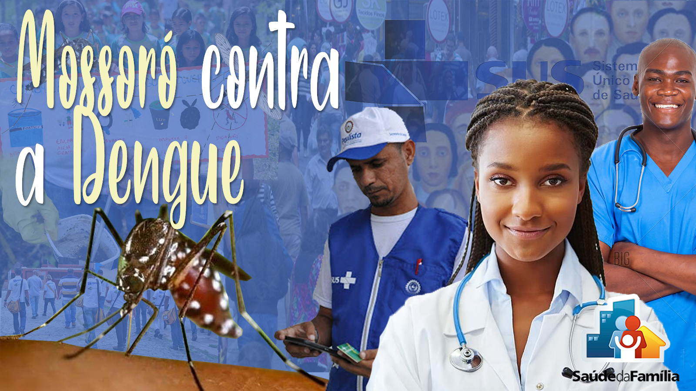
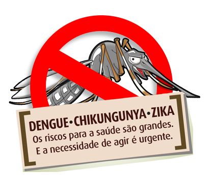

Não se nega a relevância da ESF no tocante à qualidade de vida da sociedade brasileira. Esse projeto, com uma atenção integral, equânime e contínua, se fortalece como uma porta de entrada do Sistema Único de Saúde (SUS) e consegue, de uma forma articulada e certeira, intervir nos fatores que colocam o bem-estar de uma comunidade em risco. Para exemplificar isso, trouxemos o seguinte relato:
"Sou moradora do bairro de Tirol, em Natal-RN, e venho mostrar o quanto a estratégia da saúde da família foi fundamental para a melhoria dos casos de Chikungunya que ocorreram em meu bairro no ano de 2019.
Em maio de 2019 começaram a aparecer diversos casos com sintomas semelhantes no meu bairro, levando pessoas, inclusive, a óbito. Os sintomas sempre envolviam febre alta, dor nas articulações e vermelhidão na pele. Porém, ao irem aos hospitais, os exames raramente acusavam algo.
Com o aumento exponencial de casos, os agentes da saúde se mobilizaram e foram até nossas casas para identificar os sintomas e orientar sobre uma possível doença transmitida pelo mosquito Aedes aegypti. Além disso, eles informaram sobre um encontro de bairro que haveria na casa de um morador, direcionado à pesquisa do que estava acontecendo. Também, coletaram o contato do responsável de cada moradia e estabeleciam uma linha de contato direto para serem notificados de novos casos ou dúvidas.
Esse encontro ocorreu em um final de semana, na casa de um morador da comunidade que foi cedida para tal e, nele, estavam presentes um médico infectologista, enfermeiros, técnicos de enfermagem, agentes da saúde e estudantes. Lá foram feitos exames de todos que possuíam sintomas e várias anamneses em todos que compareciam. Esses exames foram levados para a universidade federal do estado (UFRN) que, em parceria com o sistema de saúde, faziam a análise do que havia sido colhido e, então, foi encontrada uma mutação do vírus da Chikungunya.
Confirmada a causa da doença, eles voltaram a ir às casas dos moradores da comunidade, dessa vez em busca dos focos e dando orientações de como evitar novos focos e como proteger, principalmente, grávidas e idosos. Atrelado a isso, começaram a passar diariamente carros fumacê com veneno para matar o mosquito transmissor da doença. Por fim, foram mapeados os imóveis abandonados (que totalizavam quase 90) no bairro, para que buscassem autorização para entrar neles e buscarem se havia focos do mosquito dentro deles.
Hoje, um ano depois, entraram em contato novamente com as pessoas que tiveram sintomas mais graves para voltar ao hospital do estado - o Giselda Trigueiro - para fazer novos exames e conferir como estavam as pessoas infectadas com aquele vírus.""
Um outro exemplo de ação impulsionada pela ESF ocorreu em maio deste ano, 2020, em Mossoró, no bairro Santo Antônio. Equipes de agentes (de saúde e sanitários) da ESF municipal foram às ruas para realizar um trabalho educativo e de coparticipação com a população local, com o intuito de combater as arboviroses (Dengue, Zika e Chikungunya), tão comuns na região, além de distribuírem máscaras para os moradores como medida protetiva ao COVID-19.
“Estamos fazendo um trabalho de conscientização, juntamente com os agentes de endemias e saúde, para alertar mais uma vez a comunidade sobre os cuidados com as arboviroses e o enfrentamento à covid-19. Como não podemos entrar nas casas nós pedimos que as pessoas cuidem dos seus reservatórios. A população precisa nos ajudar para não sofremos com essas arboviroses novamente.”
Explicou Teresa Cristina, técnica da Vigilância em Saúde da Prefeitura de Mossoró. A ação foi tão bem recebida pelos cidadãos que acabou se expandindo também ao bairro Bom Jesus.
Mais informações sobre o ocorrido estão no site da Prefeitura de Mossoró nesse link.